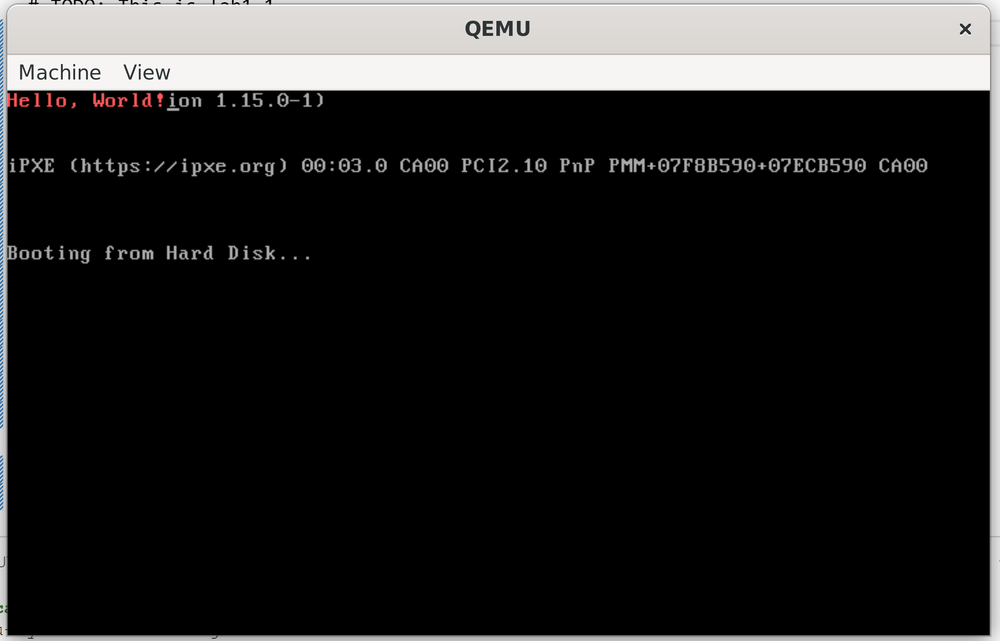
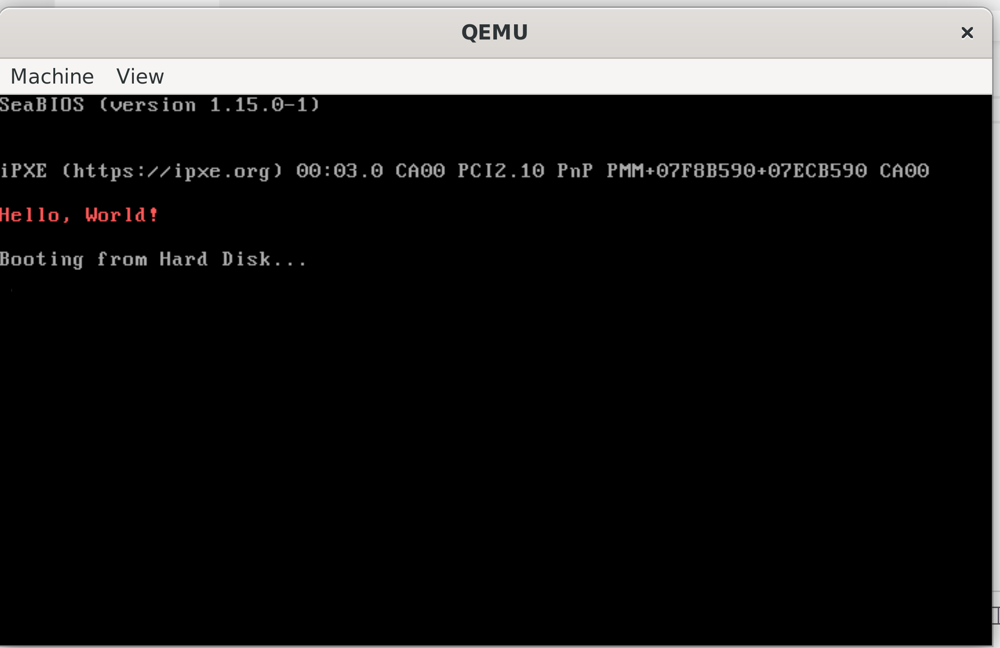
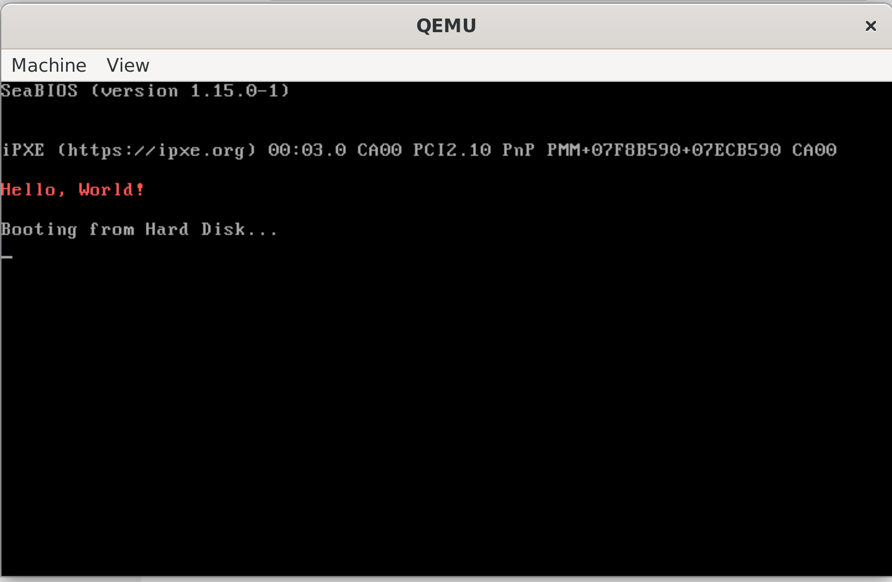

姓名: 闻嘉迅
学号: 211220091
日期: 2023.9.24(最后修改)
版本: v1.0
完成全部内容
将相应代码拷贝到mbr.s中，编译后运行得到结果。

实现步骤：
修改start.s:
in $0x92, %al
or $0x2, %al
out %al, $0x92
gdt:
.word 0x0000 #GDT第一个表项必须为空
.word 0x0000
.word 0x0000
.word 0x0000
.word 0xffff #代码段描述符
.word 0x0000
.byte 0x00
.byte 0x9a
.byte 0xcf
.byte 0x00
.word 0xffff #数据段描述符
.word 0x0000
.byte 0x00
.byte 0x92
.byte 0xcf
.byte 0x00
.word 0xffff #视频段描述符
.word 0x8000
.byte 0x0b
.byte 0x92
.byte 0xcf
.byte 0x00
movl %cr0, %eax
or $0x1, %eax
movl %eax, %cr0
运行结果:

start.s的修改参照Lab1.2
由于引导程序运行后转到bootMain函数运行，因此修改bootMain函数:
void bootMain(void) {
// FIXME
void (*app)(void);
app=0x8c00;
readSect(app, 0x1);
app();
}
运行结果如图:

CPU: 即中央处理器，负责处理输入的指令。
内存: 负责存储程序运行中的代码和数据。
BIOS: 即基本输入输出系统，计算机开机时负责进行系统自检，搜索启动设备(通常为硬盘)并加载MBR到内存。
磁盘: 计算机的外部设备之一，负责存储数据和代码。
主引导扇区: 即MBR，包含加载程序和分区表等部分。在BIOS成功加载MBR后，将会运行加载程序。
加载程序: MBR的一部分，负责进行计算机的初始化和加载操作系统引导程序，用以启动操作系统。
操作系统: 负责管理计算机的硬件资源并向其他用户程序提供服务的系统软件。
中断向量表用于管理并处理计算机的中断请求和异常。它将不同的中断向量编号映射到相应的中断处理程序的入口地址。
该脚本在检测目标程序大小是否合规后对其用0x00填充每个字节至510B，并在最后添加0x55、0xAA两个字节。使其能够被BIOS识别为可进行加载的MBR。
就Lab1.3来说:
计算机加电后，BIOS首先开始运行，自检通过后BIOS会尝试搜索启动设备并加载MBR，若成功则跳转至MBR运行其加载程序。加载程序首先在实地址模式下运行，随后开启保护模式，最后跳转至操作系统程序入口处执行OS程序。